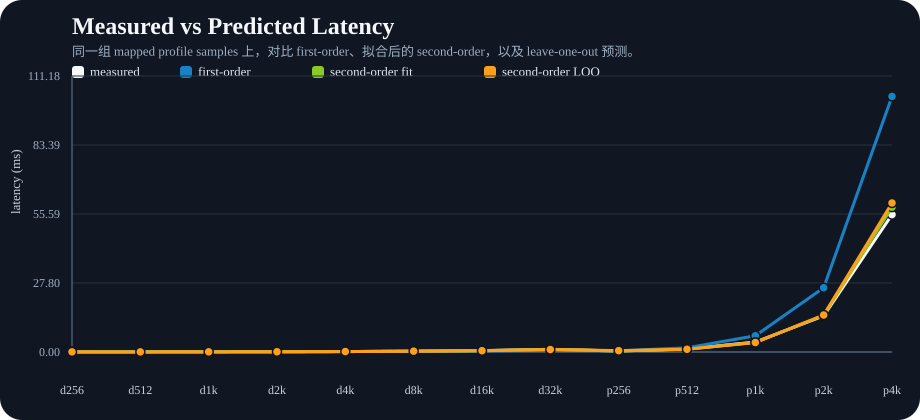
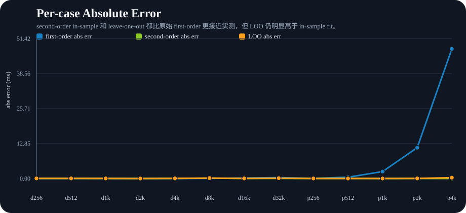
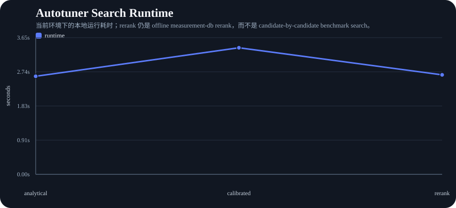
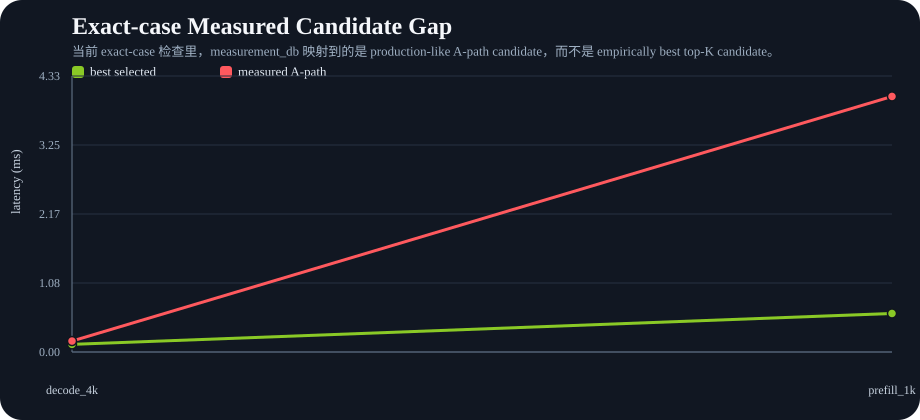

这页把 current `TT 主线 FlashMLA` 的 cost-model calibration、mapped profile fidelity、decode preset top-1 与 measurement-db rerank 边界统一整理出来。由于 Part I 主方法已经切到 `DeepSeek FlashMLA`，本页结论应读作 `generic MLA backend planning proxy`，而不是 direct DeepSeek autotuning。




说明：current rerank 仍是 offline measurement-db rerank。它能把 production-like measured path 锚回 candidate pool，但还不能替代 candidate-by-candidate benchmark-driven empirical search。